Оценка качества материалов АФС
А06 · Качество АФС
Дрыга Данила Олегович
tg: hopkuh
Последовательность операций
- Определить задачу (границы участка и требования к материалу)
- Определить стоимость работ
- Провести рекогносцировку
- Спланировать АФС
- Создать ПВО
- Провести АФС
- Оценить качество материалов АФС
- Обработать полученные материалы
- Провести полевое дешифрирование
- Подготовить отчет/план
- Пройти экспертизу
Оценить качество материалов АФС
- Первичный осмотр материалов
- Первичная обработка материалов
- Оценка ФГМ качества материалов
- Оценка фотографического качества материалов
8.2.2 Контроль материалов аэрофотосъемки (первичный)
В процессе контроля материалов аэрофотосъемки проверяется соответствие качества материалов требованиям ТЗ и нормативных документов по следующим показателям: - полнота материалов (покрытие снимками участка съемки), наличие требуемых перекрытий аэрофотоснимков; - фотографическое качество (общая визуальная оценка). Результаты контроля отражаются в соответствующем разделе технического отчета.
ГОСТ ГОСТ Р 59328-2021
8.2.2 Контроль материалов аэрофотосъемки (первичный)


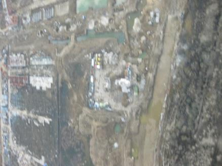
8.2.2 Контроль материалов аэрофотосъемки (первичный)
- Контроль выполняют по накидным монтажом всего участка или отдельных маршрутов.
- На аэрофотоснимках опознают поворотные точки границ участка съемки и сравнивают с обозначенными проектными границами на топографической карте. С накидных монтажей участков, где аэрофотосъемка не завершена (имеются пропуски), делают репродукции, на которых сверху подписывают — «участок не завершен».
- ГОСТ ГОСТ Р 59328-2021
9 Требования к фотограмметрическому качеству материалов аэрофотосъемки
9.1 Взаимные и абсолютные углы наклона аэрофотоснимков не должны превышать значений, указанных в таблице Г.1 приложения Г.
9.2 Отличие фактической высоты фотографирования от заданной не должно превышать значений, указанных в 8.1.
9.3 Отклонения продольного и поперечного перекрытий аэрофотоснимков от номинальных проектных значений, должны быть в пределах, указанных в таблице Г.2
9.4 Непараллельность базиса фотографирования стороне аэрофотоснимка ("елочка") при выполнении аэрофотосъемки прямолинейными маршрутами кадровой АФК с использованием аэрофотоустановки не должна превышать 7°; при отсутствии аэрофотоустановки - 14°.
9.5 При аэрофотосъемке площадного или линейно-протяженного объекта прямолинейными маршрутами непрямолинейность маршрутов, определяемая как отклонение фактического положения маршрута от проектного положения, не должна превышать 3% от ширины полосы захвата местности аэрофотокамерой
ГОСТ ГОСТ Р 59328-2021
Взаимные и абсолютные углы наклона аэрофотоснимков
Взаимные и абсолютные углы наклона аэрофотоснимков не должны превышать значений, указанных в таблице
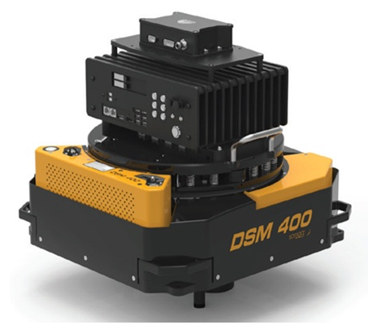
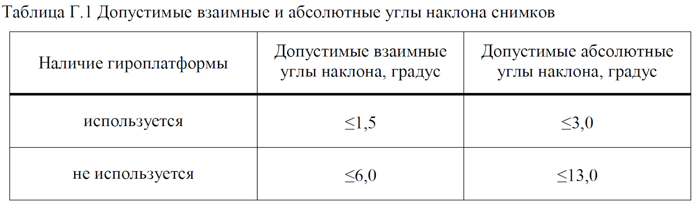
Взаимные и абсолютные углы наклона аэрофотоснимков
- Суммарный угол считается по формуле:
- Где α - угол наклона снимка,
- θ (тета) - угол тангажа (англ. pitch),
- γ (гамма) - угол крена/угол наклона (англ. roll).
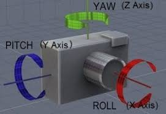
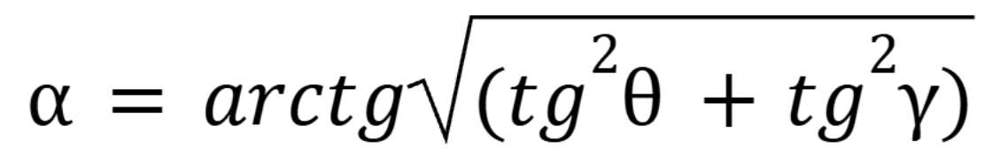
Взаимные и абсолютные углы наклона аэрофотоснимков
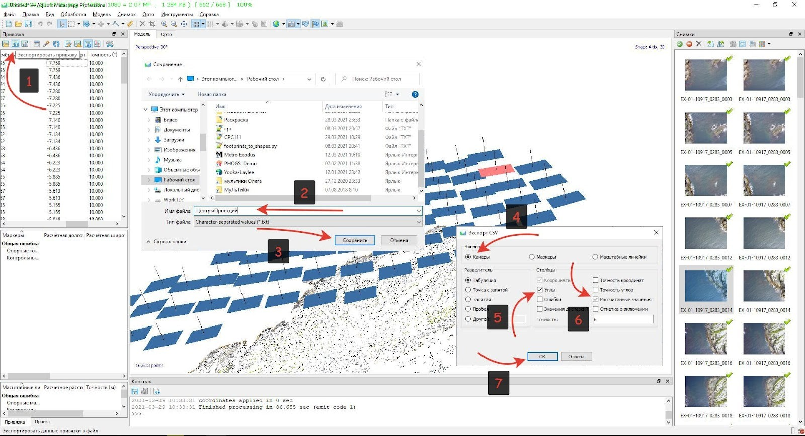
Отличие фактической высоты фотографирования от заданной
Высота фотографирования не должна отличаться от заданной более чем на 3% при съемке равнинных территорий и на 5% - при съемке всхолмленных и горных территорий.
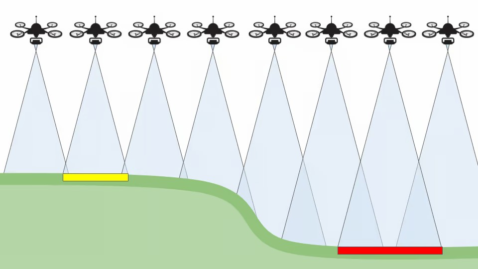
Отличие фактической высоты фотографирования от заданной
Отличие фактической высоты фотографирования от заданной
- Определить высоту БВС
- Определить высоту рельефа
- Вычислить высоту фотографировния
- (Hфреал-Нфтреб)/Hфтреб < 5%
- Hфреал = Hабсреал – hсрреал [м]
Отличие фактической высоты фотографирования от заданной
- определяют по измеренным базисам на накидном монтаже и топографической карте по формуле
- где dK — базис на карте; М — знаменатель масштаба карты; dнм — базис на накидном монтаже
- При аэрофотосъемке равнинной местности базисы выбирают по диагоналям накидного монтажа. Концами базисов служат достоверно опознаваемые точки на накидном монтаже и соответственные им на карте. При съемке местности со значительным рельефов базисы выбирают в пределах одного маршрута.
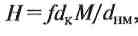
Отклонения продольного и поперечного перекрытий
Отклонения продольного и поперечного перекрытий аэрофотоснимков от номинальных проектных значений, должны быть в пределах, указанных в таблице
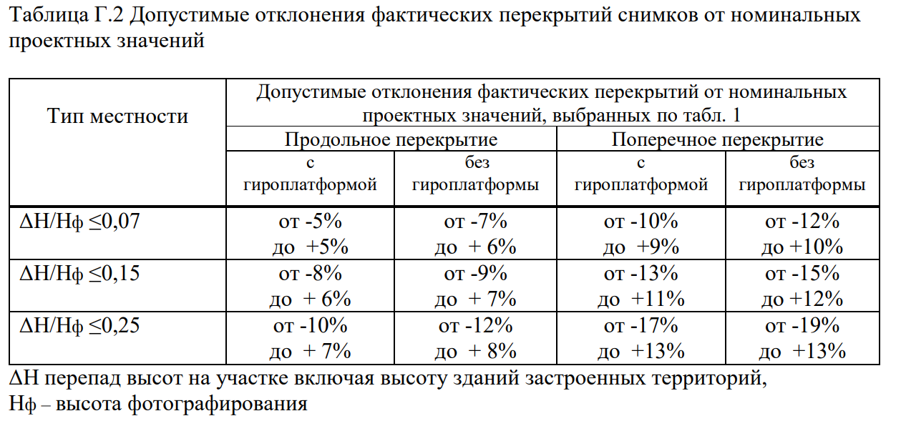
Отклонения продольного и поперечного перекрытий
Величины перекрытий аэрофотоснимков не должны отклоняться от запроектированных значений более чем на 10 %. но не допускается продольное перекрытие отдельных аэрофотоснимков менее 55 %
~60%
~60%


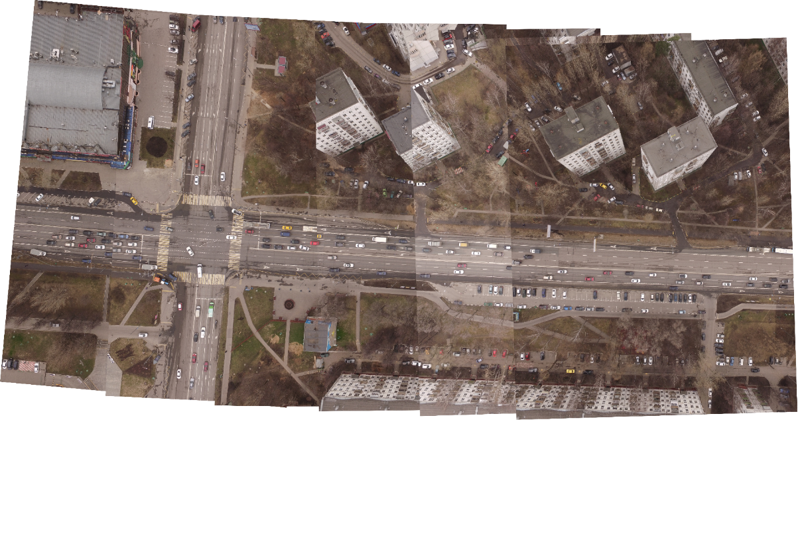
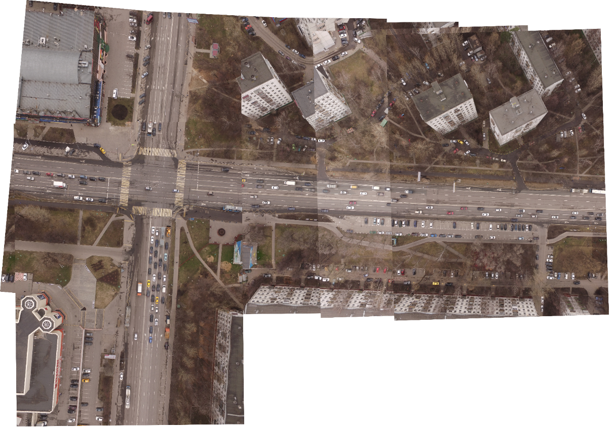

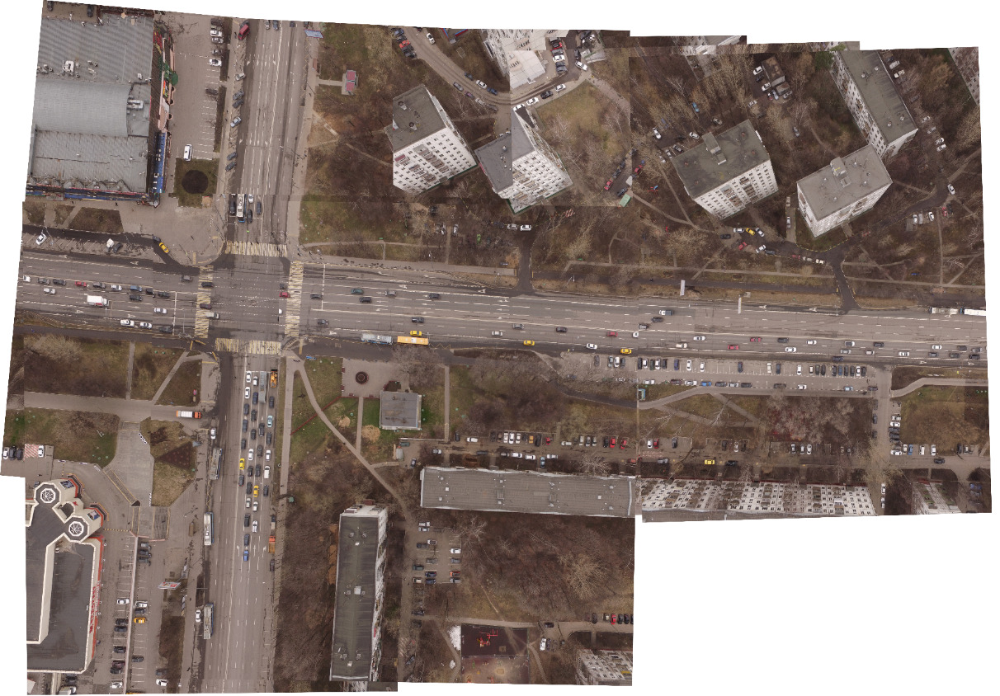


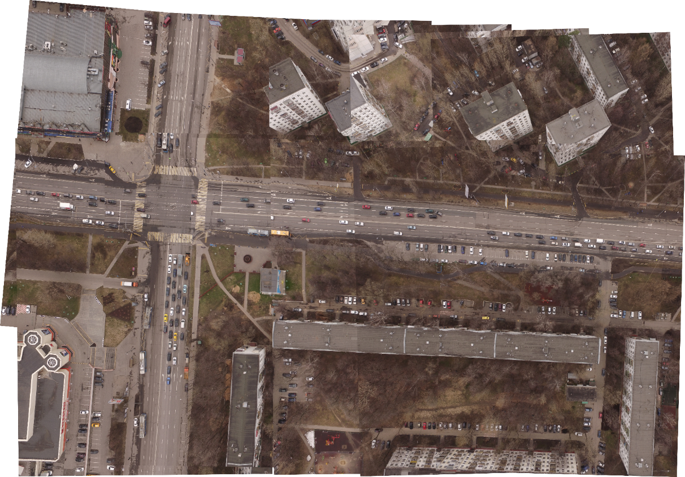

Непараллельность базиса фотографирования стороне аэрофотоснимка ("елочка")
при выполнении аэрофотосъемки прямолинейным маршрутами кадровой АФК с использованием аэрофотоустановки не должна превышать 7°; при отсутствии аэрофотоустановки - 14°.
https://studfile.net/preview/9338164/page:2/
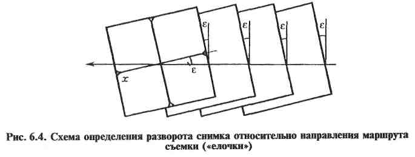
Непараллельность базиса фотографирования стороне аэрофотоснимка ("елочка")
- Расчет курса ψ
- Расчет курсового угла
- расчет отклонений ε = ψснимка - ψмаршрута

Непрямолинейность маршрутов
не должна превышать 3% от ширины полосы захвата местности аэрофотокамерой
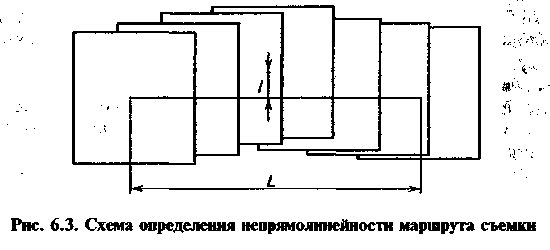
Непрямолинейность маршрутов
начинают с определения главных точек крайних снимков маршрута. За главные точки принимают пересечение линий, соединяющих противоположные координатные метки. Затем соединяют прямой линией и измеряют расстояние L между ними.
После этого измеряют уклонение l от этой прямой главной точки наиболее удаленного снимка. Это уклонение называют стрелкой прогиба маршрута. Отношение стрелки прогиба к длине маршрута, выраженное в процентах, есть непрямолинейность маршрута (n)
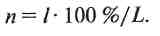
Непрямолинейность маршрутов
отклонение движения БВС (точка C) от оси маршрута (AB)
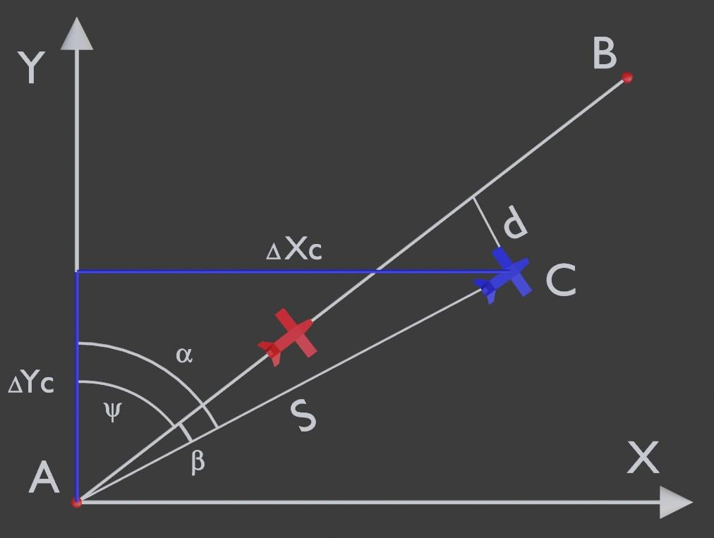
Непрямолинейность маршрутов
- определить расстояние до точки фотографирования от начала маршрута S:
- определить расстояние от каждой точки фотографирования до оси маршрута d:
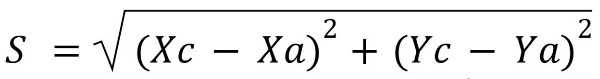
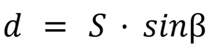
10 Требования к фотографическому качеству материалов аэрофотосъемки
10.1 Цифровые аэрофотоснимки, передаваемые заказчику, представляются как результат послеполетной и первичной обработки материалов АФС, что в зависимости от используемой аэрофотосъемочной камеры может включать разные этапы обработки с целью получения аэрофотоснимков требуемого фотографического качества, уровня обработки, разрядности и в требуемом формате в соответствии с ТЗ.
10.2 На аэрофотоснимках не должно быть изображений облаков, а также теней от облаков, бликов, ореолов и дымов, препятствующих выполнению фотограмметрической обработки и дешифрированию аэрофотоизображений. Изображения облаков, бликов и дымов не являются препятствующими выполнению фотограмметрических работ и дешифрированию, если они расположены на участках аэрофотоснимка, не содержащих изображений значимых для топографической съемки объектов или их деталей.
10.3 При аэрофотосъемке территорий, где могут быть неизбежные источники производственных дымов, материалы АФС, покрывающие такие участки, должны отвечать специально оговоренным требованиям ТЗ.
10.4 Аэрофотоснимки должны быть правильно экспонированы и обработаны в результате первичной обработки. Правильность экспонирования и первичной обработки оценивается с помощью показателя контраста цифрового изображения K, вычисляемого по формуле
где G - максимально возможное число градаций для используемой разрядности (например, 256 для 8 бит);
- максимальное значение пикселя на аэрофотоснимке;
- минимальное значение пикселя на аэрофотоснимке.
Значение показателя K правильно экспонированного и обработанного аэрофотоснимка должно быть в интервале 0,75-0,99 для объекта съемки среднего и высокого контраста. При низком контрасте объекта съемки значение показателя K может быть ниже 0,75. Значения , определяются по гистограмме или специальным программным средством. На аэрофотоснимке не должно быть потерь деталей в светах и тенях. Этому соответствует отсутствие на аэрофотоснимке пикселей со значениями, равными нулю и G-1. Допускается наличие пикселей со значениями равными, G-1, если оно обусловлено наличием солнечных бликов и их количество не превышает 0,5% от общего числа пикселей в аэрофотоснимке.
10.5 Аэрофотоснимки должны обладать удовлетворительной резкостью фотографического изображения. Это в том числе означает, что должна отсутствовать визуально заметная нерезкость ("смаз") изображения, обусловленная его продольным линейным сдвигом или угловыми колебаниями воздушного судна. Выраженный в пикселях линейный элемент разрешения аэрофотоснимка, определенный по пограничной кривой с использованием частотно-контрастной характеристики изображения, не должен превышать 1,25 пикселя.
10.6 Цвета объектов на изображении должны быть переданы корректно, с соблюдением визуально наблюдаемого баланса белого цвета без заметного преобладания того или иного цветового компонента.
10.7 Перекрывающиеся части аэрофотоснимков одного съемочного участка должны быть визуально близки (без выраженного различия изображений одной и той же территории на двух смежных снимках) по интегральной яркости, контрасту, цветовому тону.
10.8 Если исходные цифровые аэрофотоснимки представлены в сжатом формате, то сжатие должно быть выполнено с использованием максимального значения показателя качества изображения (с минимальным коэффициентом потери информации).
10.9 Результаты проверки качества материалов АФС должны быть отражены в паспорте аэрофотосъемки (приложение Е).
ГОСТ ГОСТ Р 59328-2021
10 Требования к фотографическому качеству материалов аэрофотосъемки
10.2 На аэрофотоснимках не должно быть изображений облаков, а также теней от облаков, бликов, ореолов и дымов, препятствующих выполнению фотограмметрической обработки и дешифрированию аэрофотоизображений.
10.4 Аэрофотоснимки должны быть правильно экспонированы и обработаны в результате первичной обработки.
10.5 Аэрофотоснимки должны обладать удовлетворительной резкостью фотографического изображения.
10.6 Цвета объектов на изображении должны быть переданы корректно, с соблюдением визуально наблюдаемого баланса белого.
10.7 Перекрывающиеся части аэрофотоснимков одного съемочного участка должны быть визуально близки по интегральной яркости, контрасту, цветовому тону.
10.8 Если исходные цифровые аэрофотоснимки представлены в сжатом формате, то сжатие должно быть выполнено с использованием максимального значения показателя качества изображения.
ГОСТ ГОСТ Р 59328-2021
10.9 Результаты проверки качества материалов АФС должны быть отражены в паспорте аэрофотосъемки (приложение Е).
На изображениях не должно быть объектов, препятствующих выполнению обработки
На аэрофотоснимках не должно быть изображений облаков, а также теней от облаков, бликов, ореолов и дымов, препятствующих выполнению фотограмметрической обработки и дешифрированию аэрофотоизображений
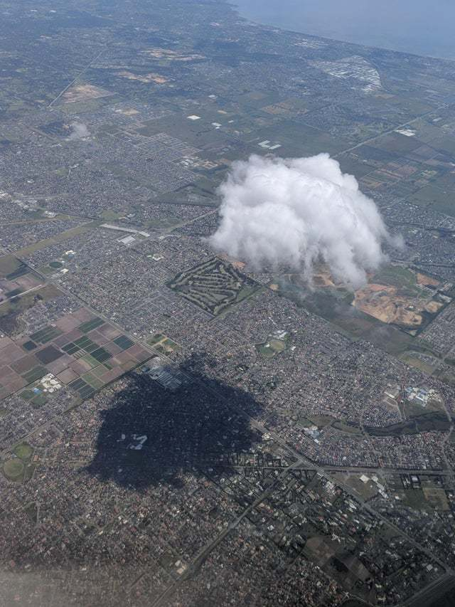
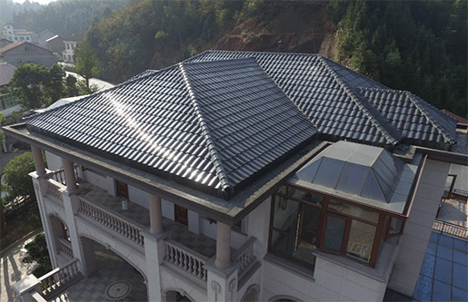
Контроль экспозиции
Аэрофотоснимки должны быть правильно экспонированы и обработаны в результате первичной обработки.
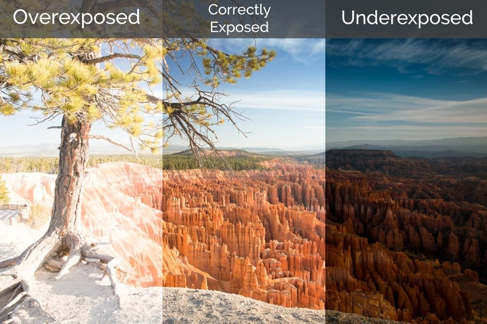
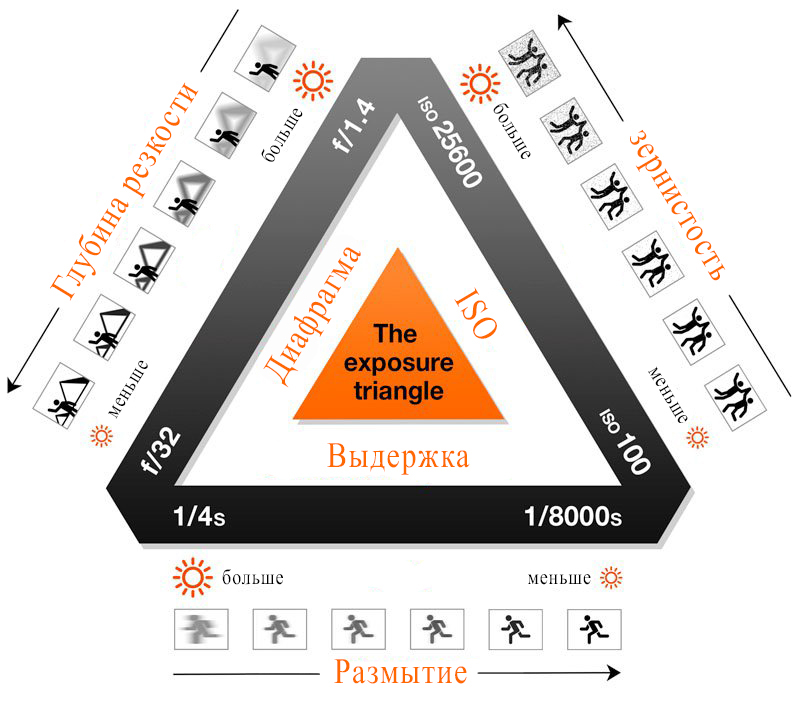
Контроль экспозиции
- Правильность экспонирования и первичной обработки оценивается с помощью показателя контраста цифрового изображения K, вычисляемого по формуле:
- где G - максимально возможное число градаций для используемой разрядности (например, 256 для 8 бит);
- Dmax - максимальное значение пикселя на аэрофотоснимке;
- Dmin- минимальное значение пикселя на аэрофотоснимке
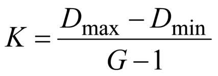
Контроль экспозиции
- 0,75 > K > 0,99
- (объект съемки среднего и высокого контраста)
- Значения Dmax,Dmin определяются по гистограмме или специальным программным средством.
- На аэрофотоснимке не должно быть потерь деталей в светах и тенях:
- Dmin > 0
- Dmax < G-1
- Допускается наличие пикселей со значениями равными, G-1, если оно обусловлено наличием солнечных бликов и их количество не превышает 0,5% от общего числа пикселей в аэрофотоснимке.
Резкость фотографического изображения
- должна отсутствовать визуально заметная нерезкость изображения, обусловленная его продольным линейным сдвигом или угловыми колебаниями воздушного судна.
- Выраженный в пикселях линейный элемент разрешения аэрофотоснимка, определенный по пограничной кривой с использованием частотно-контрастной характеристики изображения, не должен превышать 1,25 пикселя.
- Надо расписать понятно! Там сложное про производные и Фурье!
- Не по теме, но почитать: https://liveviewer.ru/2020/12/chto-takoe-rezkost-izobrazheniya/
- https://satellogic.com/2023/03/20/optimal-spatial-resolution-imagery/
- https://github.com/santosh519/image-quality-mtf-estimation/tree/main
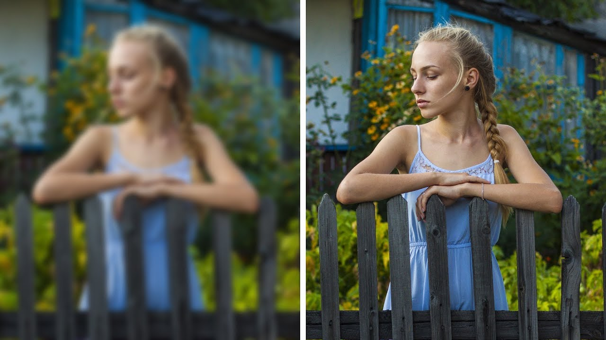
Цветопередача и ББ
Цвета объектов на изображении должны быть переданы корректно, с соблюдением визуально наблюдаемого баланса белого цвета без заметного преобладания того или иного цветового компонента
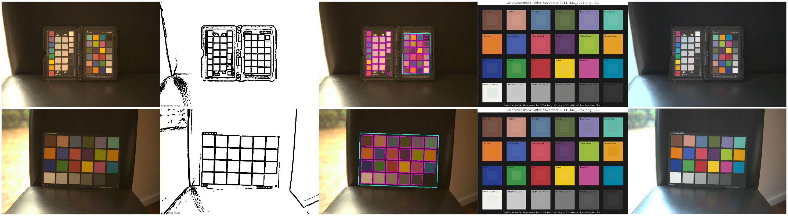
Цветопередача и ББ
- Оценка может производиться путем усреднения значения всех пикселей изображения и оценки значения яркости усредненного цвета по трем каналам
- Не работает при перенасыщенности определенными тонами
- https://www.cambridgeincolour.com/ru/tutorials-ru/white-balance.htm
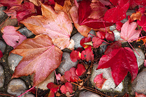
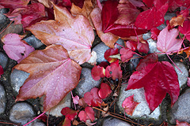
Цветопередача и ББ
Перекрывающиеся части аэрофотоснимков одного съемочного участка должны быть визуально близки по интегральной яркости, контрасту, цветовому тону
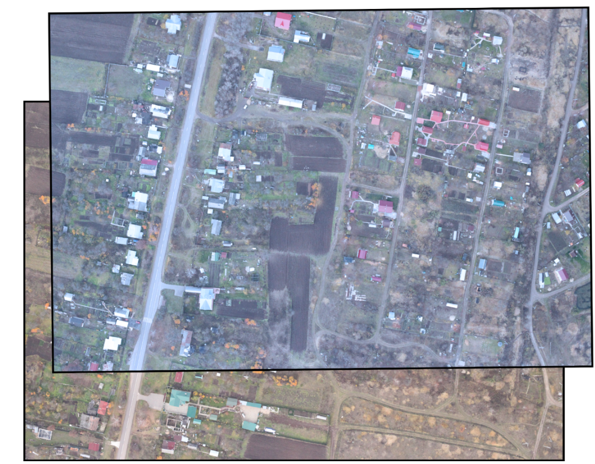
Цветопередача и ББ
- Перекрывающиеся части аэрофотоснимков одного съемочного участка должны быть визуально близки по интегральной яркости, контрасту, цветовому тону
- на соседних снимках определяются усредненные значения яркости по каналам,
- производится сравнение значений на соседних снимках
Цветопередача и ББ
Если исходные цифровые аэрофотоснимки представлены в сжатом формате, то сжатие должно быть выполнено с использованием максимального значения показателя качества изображения
Как это проверить???
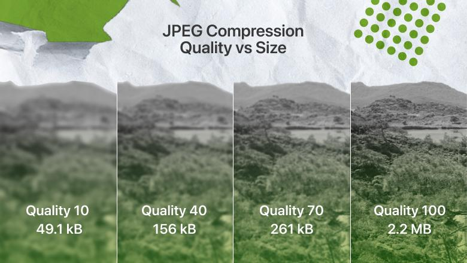
Результаты отражают в техническом отчете
- Качество материалов аэрофотосъемочной продукции соответствует ТЗ и требованиям к АФС.
- Руководитель подразделения технического контроля доцент Дрыга Д.О.________________
- (должность, Ф.И.О., подпись, дата)
- Мы едем снимать все заново!
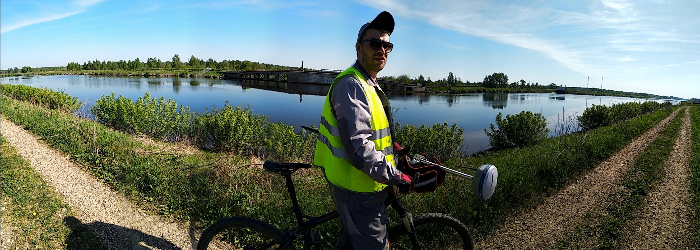
оценка максимального сдвига изображения с учетом проектных параметров аэросъемки или проектируемой выдержки при отсутствии компенсации сдвига изображения
Качество изображения
— что ты такое и как тебя оценить
Спасибо!
- Дрыга Данила Олегович
- +7(916)030-62-56
- hopkuh@gmail.com
- sketchfab.com/hopkuh